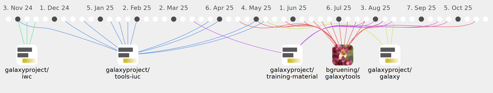

nilchia

Commits all-time: 633
Commits last year: 448

(262)
- 2f12f7e
- 6d71e48
- b06b56a
- 86b6b0e
- e8e29f0
- 1b80c5a
- 0e3fe31
- b02275d
- 21a9591
- 3a320ab
- 602e990
- 1d48bd0
- 77b74b0
- b58daf9
- cac78ec
- cca411b
- c704113
- 327853a
- aa5c14a
- 5bf31db
- 43623df
- f1713a1
- 3b6ea76
- c0602db
- 34c7329
- f18c058
- 5a349f0
- 83da00f
- ec852d5
- f2e6ca6
- f0eda02
- 01e4c93
- af04fbb
- 48067f7
- 19da10d
- 2ad0c18
- 6c12ddf
- ff2bf70
- 6b630ac
- 20e932c
- 4070e95
- 67105bc
- 9122310
- 5c90506
- 2e475ac
- 40222b0
- 85dd9fa
- 3ccbce9
- 98aa070
- f432cf1
- 7b36761
- 36d6bca
- 9953efe
- a6fc02f
- 9f29a07
- 17c305f
- df1c24e
- f5353a3
- caa5eed
- b77eaca
- 1293298
- cd40808
- 71faab2
- db2d551
- 718b54d
- 46ed1ab
- b134a50
- 73b3195
- 9bfa3c9
- 0640255
- cdcdc3a
- e66421f
- f5da0ca
- 9a19af6
- bb2af23
- f7db9d1
- 4b05164
- b3aa76e
- e36b761
- d65306e
- dbc3ca9
- 47901cd
- c612caa
- 91e777a
- 8e2f914
- c7ac615
- 4c7e765
- 5751844
- 5b3299d
- dbff9b5
- f9f4132
- 640e354
- c83c1da
- 9497ba5
- 48d8e16
- e66e114
- 45d9d28
- 23102f6
- c443354
- 128a650
- 190c6fa
- c09877d
- b9da7e9
- 5a531a2
- ae0dd06
- 57f562d
- aaf8055
- f44c40b
- 97ae86f
- 27f3e13
- 5d91113
- fbbf2d8
- 3647db8
- 09b416d
- 3111ed3
- a0de464
- e060b5a
- 3d1c4e0
- da7d15b
- b78dfa6
- 01bd0b4
- eb950bf
- 427eb38
- f9ffad1
- 0be8d04
- 466ba3e
- 4e16815
- 7ed7b4d
- 792f84b
- 6b0516c
- ed869c0
- b5e6376
- b85cda9
- 7e1f175
- f170518
- 19f9fa7
- 234274f
- bd03407
- e6f4400
- 10d3aa5
- 75458b9
- 86b3396
- caf317c
- 38b3f0f
- 89f20a7
- 6d4c8a8
- 1f3c990
- a823fca
- 493ad6f
- 251f9d0
- 5e12330
- 3f84443
- f6e30ae
- a67ac11
- 7b9a534
- 50cbb24
- 22441c7
- bfef80d
- 1517a4d
- 5c6474f
- c8a161c
- fdff19a
- 35c1bde
- 4d39cde
- 63cc824
- dae5436
- 4fcee83
- 9ce20b9
- 86a2b02
- 5f14d75
- 7677034
- c2553bd
- f020b63
- 28e4ff3
- 37c8ae9
- 9696b36
- c86d963
- f07cda4
- fb5246e
- 3919ee0
- 1b928c6
- 69fad77
- 71da488
- 1bfcc28
- 12ab742
- 78e0e48
- 8539ef8
- ae87b3a
- c8cb4f2
- 79dd1d6
- 0b76742
- 275c387
- 9091696
- 85558ad
- 41791c8
- 66146b7
- 42c227b
- 1d7d4b3
- b7722a9
- ca06fa7
- ee0482f
- 8ad7502
- bf52e38
- fa4b508
- 875142b
- 3a56b84
- b295c22
- 8e1b4e0
- 614b479
- f1e367e
- 3282078
- 7c6dfeb
- 484ecd4
- 66e3910
- 9801cad
- 3236701
- 6086927
- a6edc75
- f002101
- 333ffe9
- e996c89
- 60c458a
- 9dd8e29
- e519b75
- 497c98a
- 0d6c327
- bdfcbdf
- 55b295b
- 57db46a
- e5344bd
- c5c2783
- 6a35df5
- b106448
- 535749a
- a328abb
- b84f7e3
- e479761
- 8e1c8d4
- 3c02dff
- 2313fb9
- 215d51a
- 0c46334
- 31ee542
- 803546f
- b6ae547
- 34e5872
- b0e319e
- 8b8957b
- 42327fe
- f07fb78
- e14dc14
- c38acea
- 2ded9d6
- 1ee50e9
- 9753237
- 04b6c2d
- df7a75a
- ca79dbd
- 85db279
- bcee554
- d50a613
- 28d2fcf
(116)
- 0b5fc1e
- bcbaa0c
- d6fda04
- c60918f
- a5a91e2
- c2efc09
- b5273c1
- 5880d91
- 920d783
- 6f5a9ed
- 7f80332
- e701846
- 924b896
- 8ccf352
- 779ff13
- 63405af
- 7bb2b39
- 3d46408
- c0b0091
- d588e6d
- f12229f
- 5e32639
- 8c0e710
- c29260f
- 6bf2e54
- db2ffe6
- bd65cb0
- cde6c45
- ef0c370
- 8ced544
- 53e3ae1
- 318579b
- 563433f
- fab3039
- e03b6e0
- 839f898
- 3ecef45
- 63b31dd
- 65c1536
- 4caa895
- 51b228e
- c06e3ae
- 63f1339
- 40931e5
- 851aacd
- 965931e
- a8fe14f
- dcbadd4
- 942d978
- 3fdd964
- c346af9
- 499ba84
- 8917589
- 8f8e519
- b985e8f
- b761d8d
- a861e15
- 5545a7a
- c43e123
- 7bb9295
- b923963
- e8015d7
- 518ec36
- 51720f0
- 05b8b5b
- 3fb1c73
- c2180e7
- 9611d5c
- 8adcfd4
- 88a4a82
- a6e1ec4
- 38b3ef4
- c5b122b
- 6942446
- e55a082
- b4f3ffb
- a339183
- e3f8025
- 935fae1
- 140c1e6
- b438ed7
- f6005fa
- c38201f
- 27bc9a5
- 6b08b32
- 2d4bd92
- e64caf5
- 357489a
- ae200d8
- f735370
- 4511418
- 783557b
- 7fcbb14
- d13069d
- 2c958e8
- 46d95ab
- 48fbac4
- 2ba0ac0
- 68aedea
- 0eb88c0
- 596068d
- 2a75db5
- 87fd28d
- f6d2b8e
- 8133cc3
- 57a8a7c
- 346927a
- 3ae800e
- 1ea5100
- caa1508
- b61300b
- 04cc712
- 718bed9
- 77bcd4f
- 4dfa60a
- f986be0
(42)
- 7f615db
- 2a9d132
- ffc1674
- 80a5df8
- 1a55e80
- 9896e9b
- 8ec0610
- 921c1e5
- b818dad
- ac85e40
- 340a0d6
- 3915422
- 9c5f921
- df5171a
- 8c77942
- d6cba64
- 804aecd
- 36d68db
- ce2f76f
- fd3ef7a
- 19679bb
- dfce6f1
- 1cf17a9
- 2c38292
- be72931
- 3323d57
- bd010a1
- 49bf354
- 67d724c
- df7b4b7
- 03b5bff
- 5aa0e44
- b1a1d0a
- 20ef5b8
- 0cbc71f
- dfbecaa
- 544e89c
- 6885437
- d07a28d
- 14db8f3
- 916b566
- 2438c60
(28)